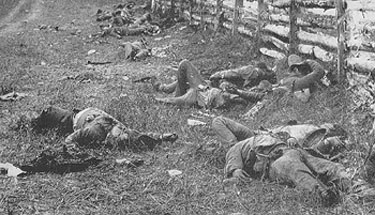

|
Occurrences of death and the spirituality upon their reflection formed a recurring theme in the letters and diaries of Franklin and Augusta County. Men from both Counties took their religion (usually Protestant) with them to war, but often received a "baptism by fire", that is a personal confrontation with the carnage of war. This personal experience with death in war, and especially the loss of close friends and family, often made soldiers change their spiritual outlook, and left them with serious doubts about the nature of their religion. There is no doubt that religion played a large role in the lives of soldiers. Some commanders mandated that their soldier's attend a Sunday worship service. More commonly, other soldiers voluntarily sought out one of the chaplains who held religious services on a regular basis. Men often prayed before the coming of a battle, hoping to encourage the Almighty to spare them from harm. Other soldiers held a fatalistic view of military service that offered them comfort in the times of extreme terror, believing that no harm would come to them until their allotted time. |
|
|  | One of the deepest insights provided by the letters and diaries of Franklin and Augusta is to observe the matter-of-fact way the soldiers treated the death which greeted them in large numbers. One soldier remarked that "Death is the common lot of all and the difference between dying today and dying tomorrow is not much, but we all prefer tomorrow." Beginning with the first casualties and increasing as the war went on, the coldness of death began to wear on soldiers, dehumanizing them to the criminality of the loss of human life. Seeing friends die on the field from shot and shell, and in the camps of disease, soldiers looked upon the loss of life with indifference. |
Men often comforted themselves with the notion that their military service was an obedience to duty, a duty to North or South, to family, or to God. Other men saw in death the coming of a better world, where the blessings of God might be bestowed upon men who had acted to their best abilities in this life, enduring the hardships of war for a stake in a better life to come. Adam Kersh, reflecting upon the death of his mother solidified the feelings of many soldiers when he declared that "we ought to try and walk more upright and try to attain the rest which is prepared for the righteous in a better world than this."
The writers of Franklin and Augusta Counties filled their letters and
diaries with comments about casualties and the loss of human life. The
mentionings suggest the above hypothesis, that death was an everyday
occurrence and that a better world waited in the beyond for the soldier
who left his life on the field.